Examples for using geomnet
Samantha Tyner and Heike Hofmann
2018-07-28
Source:vignettes/geomnet-vignette.Rmd
geomnet-vignette.Rmdlibrary(ggplot2)
library(geomnet)
data(blood)
p <- ggplot(data = blood$edges, aes(from_id = from, to_id = to))
p + geom_net(vertices=blood$vertices, aes(colour=..type..)) + theme_net()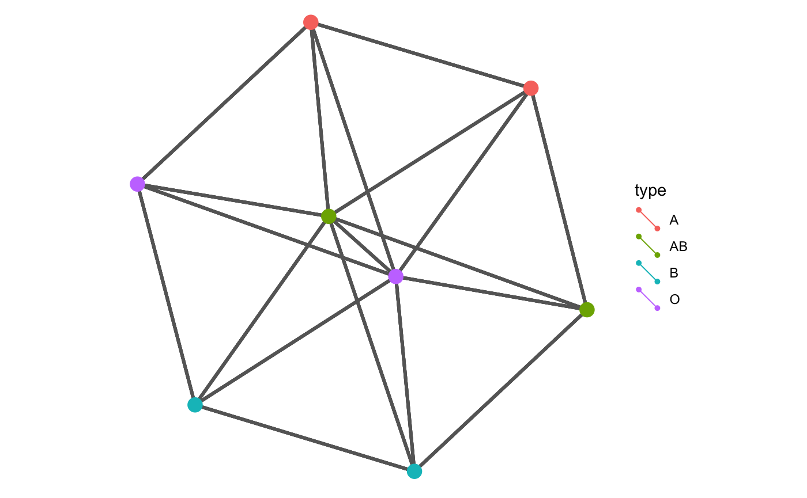
## Using from as the from node column and to as the to node column.
## If this is not correct, rewrite dat so that the first 2 columns are from and to node, respectively.## Joining edge and node information by from_id and label respectively.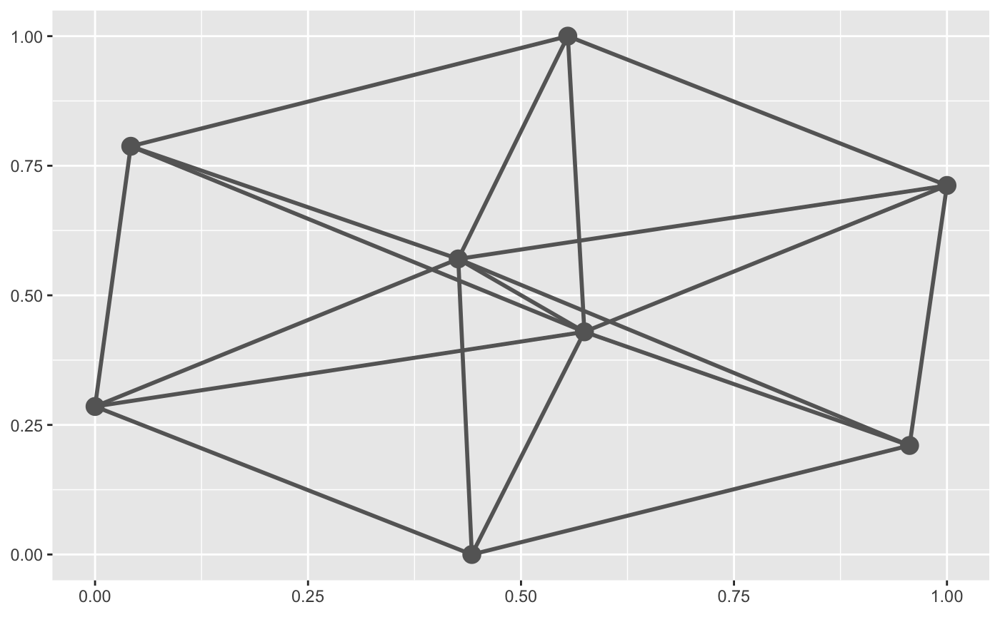
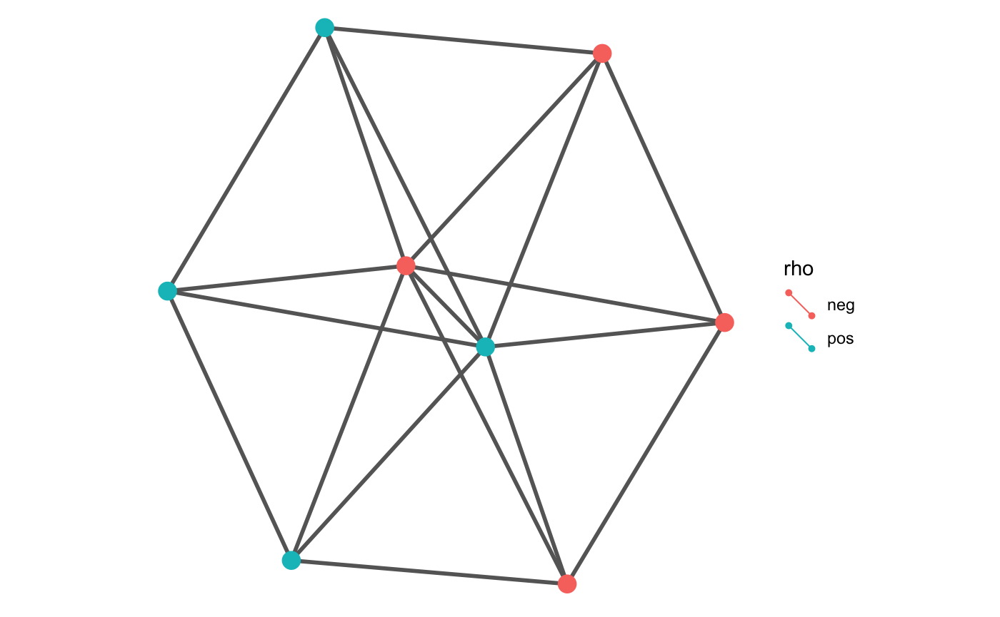
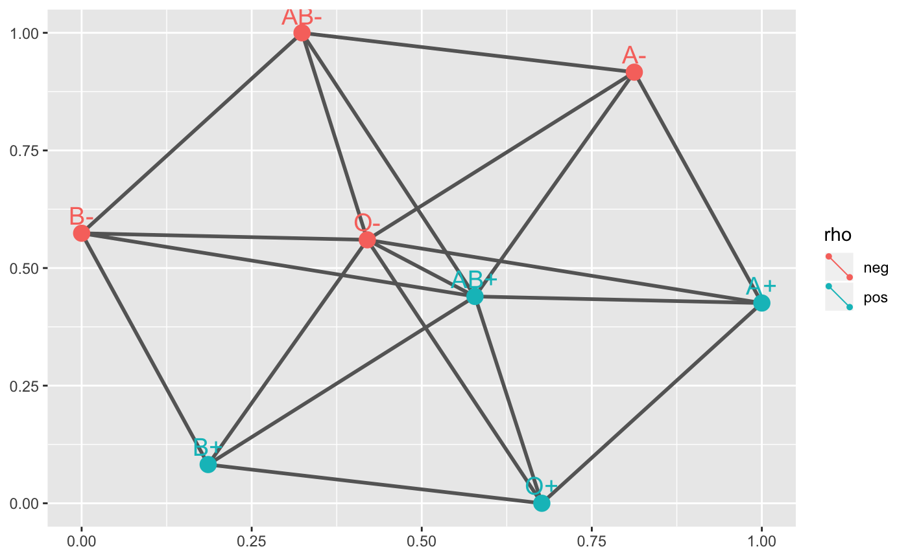
p + geom_net(aes(colour=rho, linetype = group_to, label = from_id),
vjust=-0.5, labelcolour="black", directed=TRUE) +
theme_net()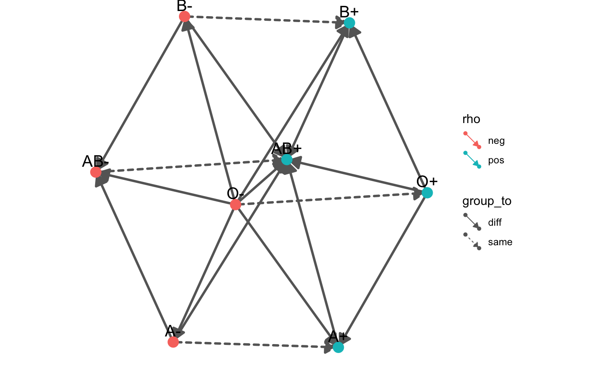
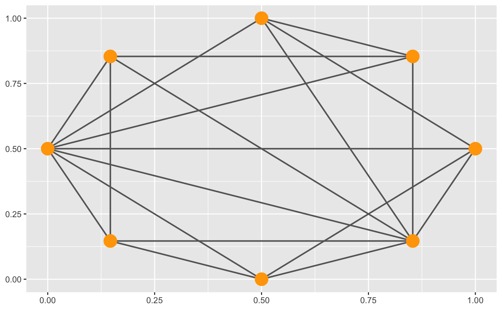
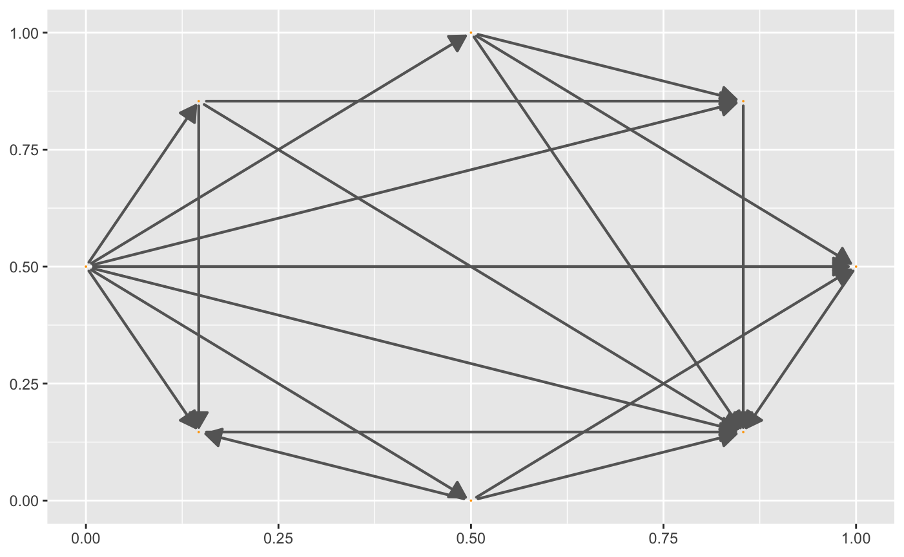
p + geom_net(aes(size=Predominance, colour=rho, shape=rho, linetype=group_to),
linewidth=0.75, labelon =TRUE, labelcolour="black") +
facet_wrap(~Ethnicity) +
scale_colour_brewer(palette="Set2")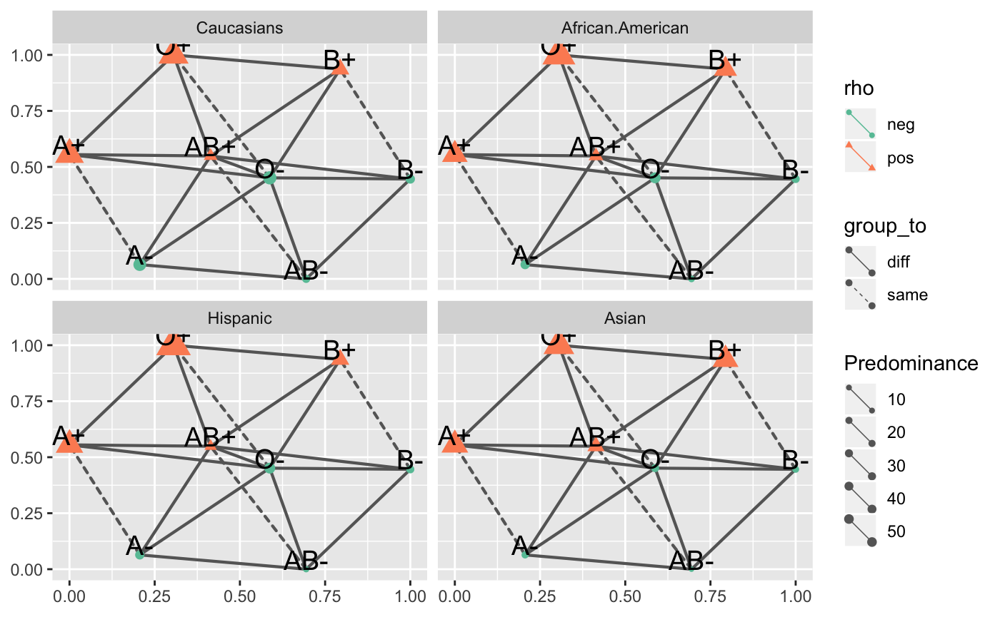
gg <- ggplot(data = blood$edges, aes(from_id = from, to_id = to)) +
geom_net(colour = "darkred", layout.alg = "circle", labelon=TRUE, size = 15,
directed = TRUE, vjust = 0.5, labelcolour = "grey80",
arrowsize = 1.5, linewidth = 0.5, arrowgap = 0.05,
selfloops = TRUE, ecolour = "grey40") +
theme_net()
gg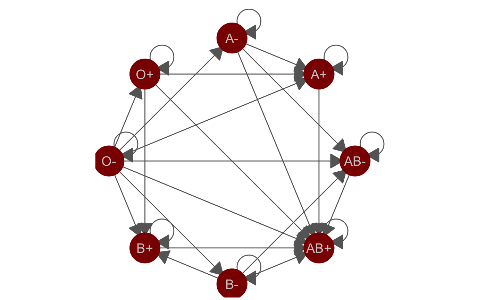
dframe <- ggplot_build(gg)$data[[1]] # contains calculated node and edge values
#'
#Madmen Relationships
data(madmen)
MMnet <- fortify(as.edgedf(madmen$edges), madmen$vertices)## Using Name1 as the from node column and Name2 as the to node column.
## If this is not correct, rewrite dat so that the first 2 columns are from and to node, respectively.
## Joining edge and node information by from_id and label respectively.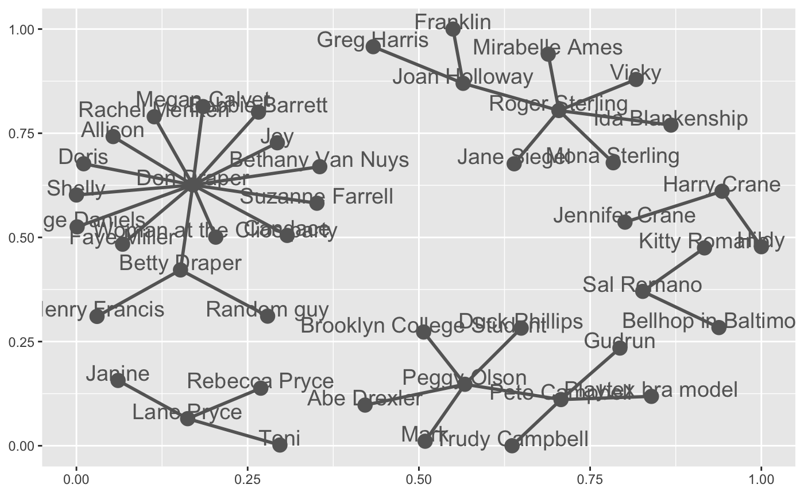
p + geom_net(aes(colour=Gender), size=6, linewidth=1, labelon=TRUE, fontsize=3, labelcolour="black")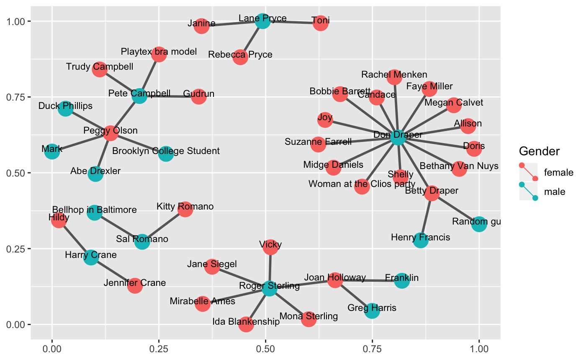
p + geom_net(aes(colour=Gender), size=6, linewidth=1, labelon=TRUE, labelcolour="black") +
scale_colour_manual(values=c("#FF69B4", "#0099ff")) + xlim(c(-.05,1.05))
p + geom_net(aes(colour=Gender), size=6, linewidth=1, directed=TRUE, labelon=TRUE,
arrowgap=0.01, labelcolour="black") +
scale_colour_manual(values=c("#FF69B4", "#0099ff")) + xlim(c(-.05,1.05))
#'
p <- ggplot(data = MMnet, aes(from_id = from_id, to_id = to_id))
# alternative labelling: specify label aesthetic.
p + geom_net(aes(colour=Gender, label=Gender), size=6, linewidth=1, fontsize=3,
labelcolour="black")
#'
## visualizing ggplot2 theme elements
data(theme_elements)
TEnet <- fortify(as.edgedf(theme_elements$edges[,c(2,1)]), theme_elements$vertices)## Using parent as the from node column and child as the to node column.
## If this is not correct, rewrite dat so that the first 2 columns are from and to node, respectively.## Joining edge and node information by from_id and name respectively.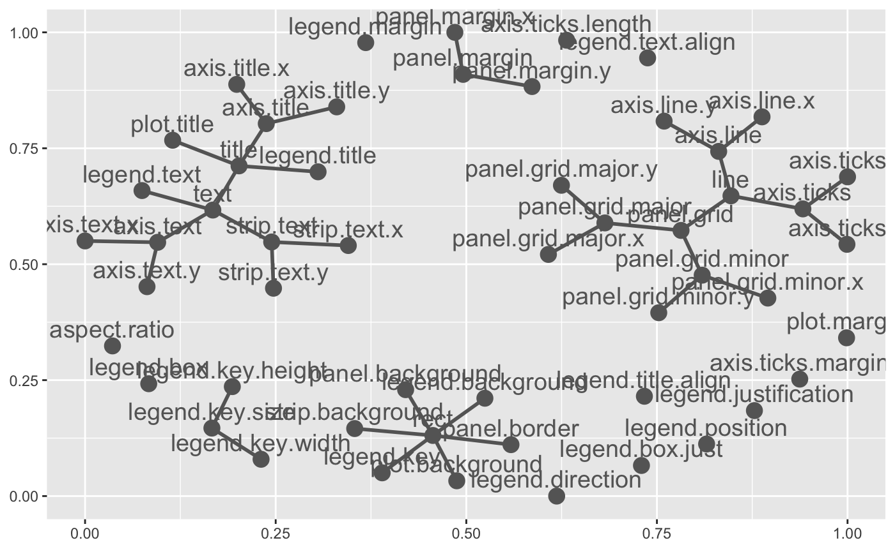
#'
## emails example from VastChallenge 2014
# care has to be taken to make sure that for each panel all nodes are included with
# the necessary information.
# Otherwise line segments show on the plot without nodes.
emailedges <- as.edgedf(subset(email$edges, nrecipients < 54))## Using From as the from node column and eID as the to node column.
## If this is not correct, rewrite dat so that the first 2 columns are from and to node, respectively.## Joining edge and node information by from_id and label respectively.#no facets
ggplot(data = emailnet, aes(from_id = from_id, to_id = to_id)) +
geom_net(aes(colour= CurrentEmploymentType), linewidth=0.5) +
scale_colour_brewer(palette="Set2")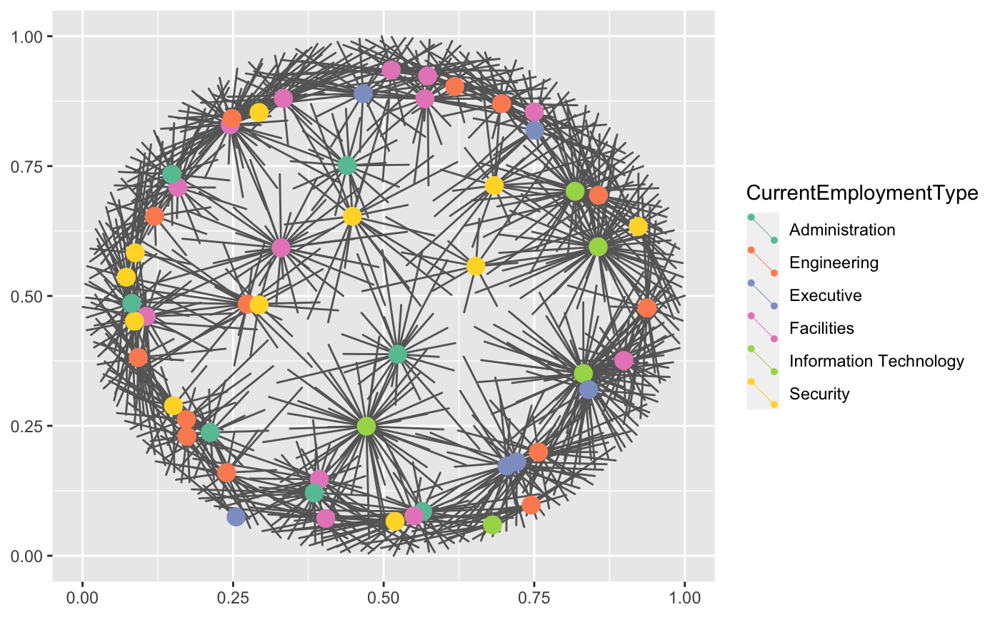
## Joining edge and node information by from_id and label respectively.ggplot(data = emailnet, aes(from_id = from, to_id = to_id)) +
geom_net(aes(colour= CurrentEmploymentType), linewidth=0.5, fiteach=TRUE) +
scale_colour_brewer(palette="Set2") +
facet_wrap(~day, nrow=2) + theme(legend.position="bottom")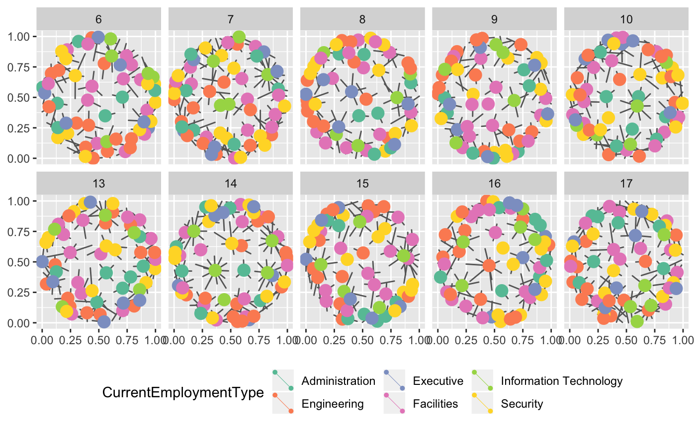
ggplot(data = emailnet, aes(from_id = from, to_id = to_id)) +
geom_net(aes(colour= CitizenshipCountry), linewidth=0.5, fiteach=TRUE) +
scale_colour_brewer(palette="Set2") +
facet_wrap(~day, nrow=2) + theme(legend.position="bottom")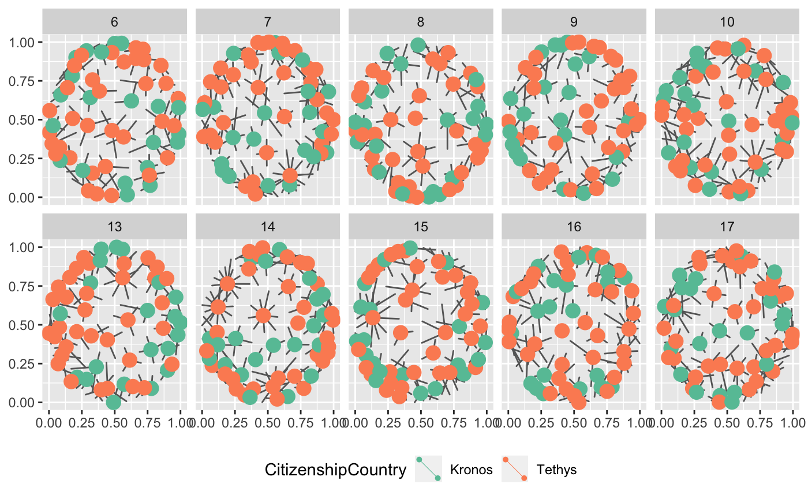
ggplot(data = emailnet, aes(from_id = from, to_id = to_id)) +
geom_net(aes(colour= CurrentEmploymentType), linewidth=0.5, fiteach=FALSE) +
scale_colour_brewer(palette="Set2") +
facet_wrap(~day, nrow=2) + theme(legend.position="bottom")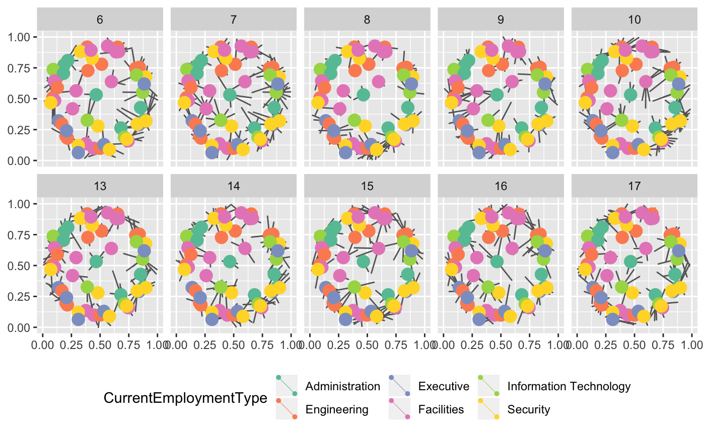
#'
## Les Miserables example
data(lesmis)
lesmisnet <- fortify(as.edgedf(lesmis$edges), lesmis$vertices[, c(2,1)])## Using from as the from node column and to as the to node column.
## If this is not correct, rewrite dat so that the first 2 columns are from and to node, respectively.## Joining edge and node information by from_id and label respectively.p <- ggplot(data=lesmisnet, aes(from_id=from_id, to_id=to_id))
p + geom_net(layout.alg="fruchtermanreingold")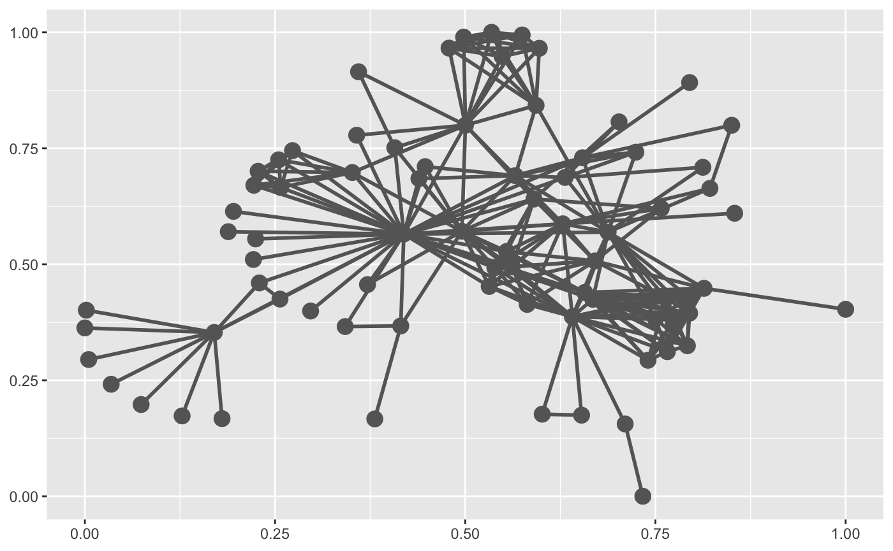
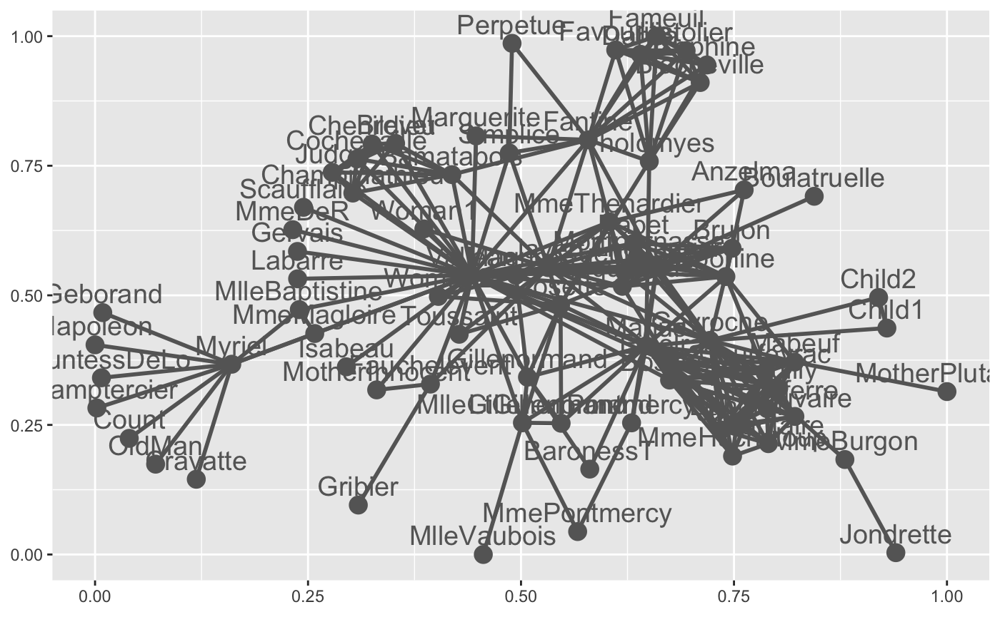
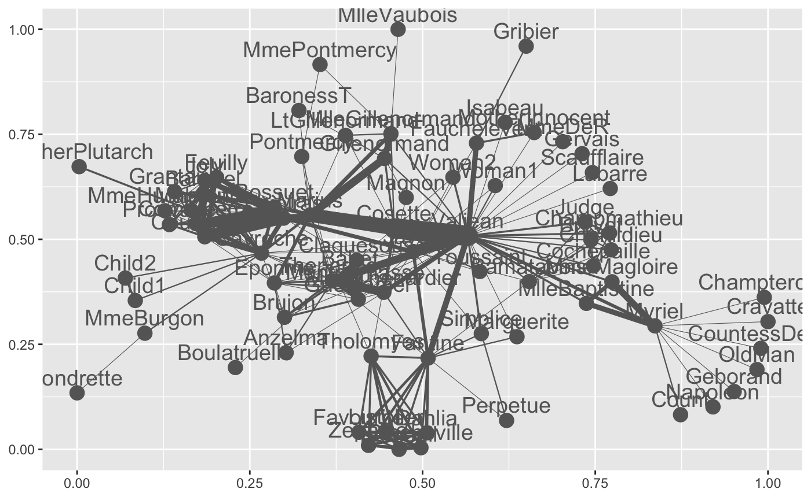
#'
## College Football Games in the Fall 2000 regular season
# Source: http://www-/personal.umich.edu/~mejn/netdata/
data(football)
ftnet <- fortify(as.edgedf(football$edges), football$vertices)## Using from as the from node column and to as the to node column.
## If this is not correct, rewrite dat so that the first 2 columns are from and to node, respectively.
## Joining edge and node information by from_id and label respectively.p <- ggplot(data=ftnet, aes(from_id=from_id, to_id=to_id))
p + geom_net(aes(colour=value), linewidth=0.75, size=4.5, ecolour="grey80") +
scale_colour_brewer("Conference", palette="Paired") + theme_net() +
theme(legend.position="bottom")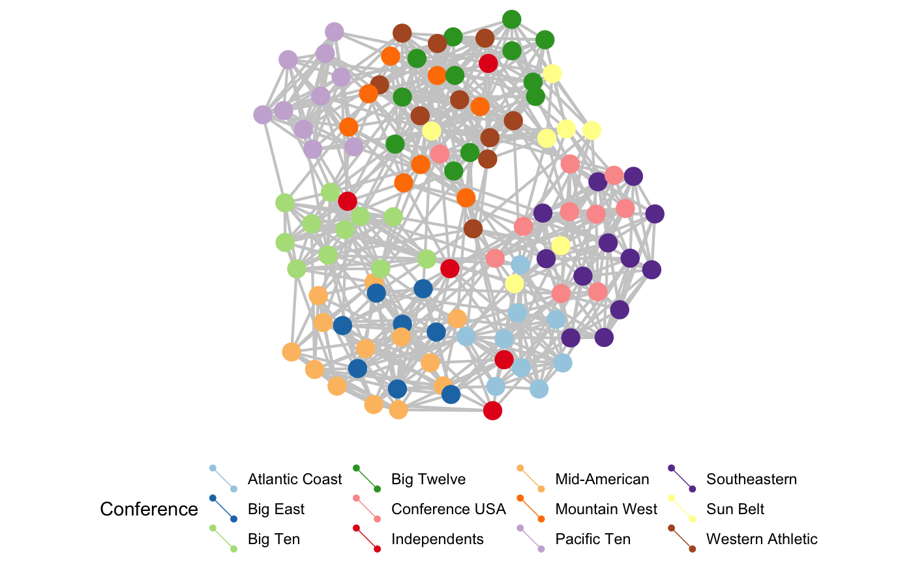